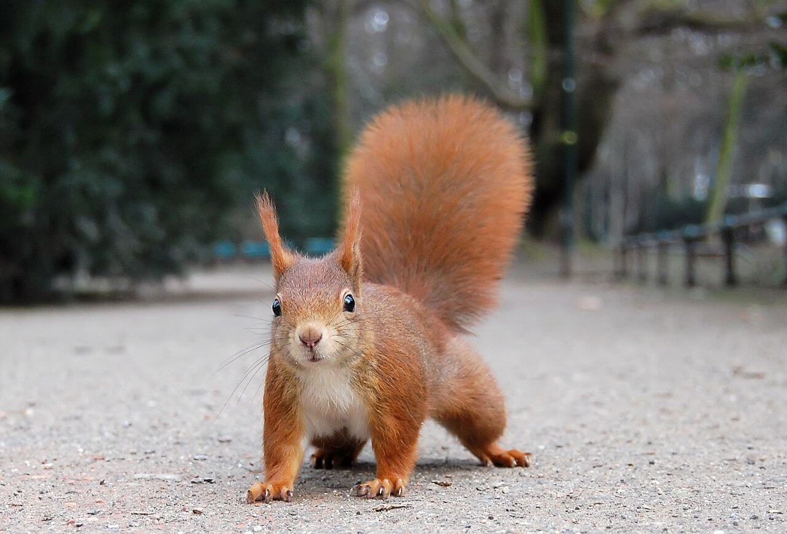

L'écureuil
Du panache !

Qui sommes-nous ?
Association créée en 2020 par des passionnés de la nature : Bill Gates et Marc Zuckerberg
Nos missions
- Observer et répertorier les écureuils en région Ile-de-France
- Accompagner et conseiller les squirrels lovers dans la mise en place d'un ecosystème propice à leur bien-être
- Soigner et réintroduire les individus victimes d'accidents ou de mauvais traitement